盛夏｜节气｜ 小暑 ｜时间｜ 七月七日至七月廿二日
今年小暑需特别注意的健康问题：胸闷、全身酸重、腿肿
原料：红苋菜、松花蛋、大蒜、猪油、盐。
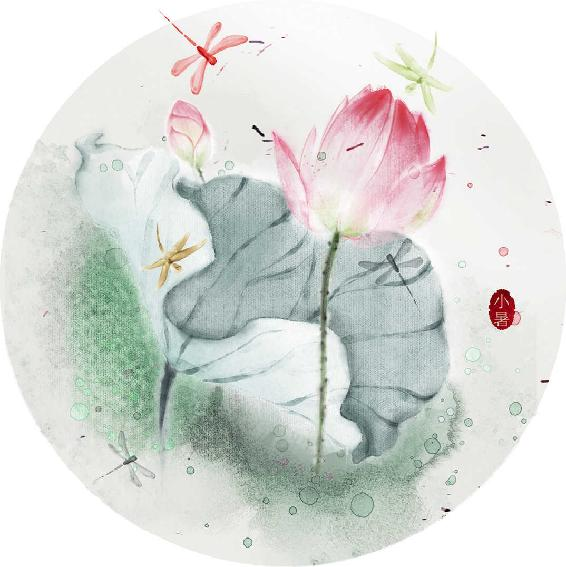
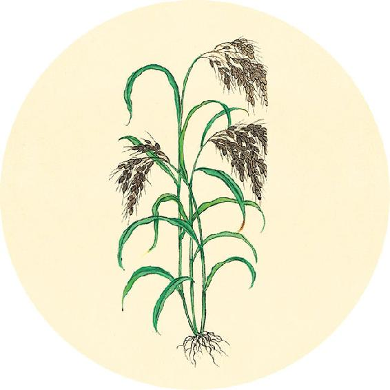
节气食方
松花蛋红苋汤
原料：红苋菜（嫩的、带根的）1把、松花蛋2只、大蒜3瓣、猪油、盐。
做法：
1. 嫩苋菜带根洗净。
2. 锅里放油，蒜切成两半，下锅爆香。
3. 松花蛋下锅炒一下，放入苋菜快炒两下，加少许盐。
4. 放入高汤或开水，水开后煮两三分钟关火。
功效：清血毒、排肠毒、祛暑热。
注意：孕4个月以内的女性慎吃苋菜。
帝曰：脉有（通行本为“其”，根据《针灸甲乙经》，改“其”为“有”字）四时动奈何？知病之所在奈何？知病之所变奈何？知病乍（通“作”，指疾病的发生）在内奈何？知病乍在外奈何？请问此五者，可得闻乎？
——黄帝内经·素问·脉要精微论
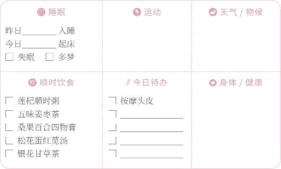
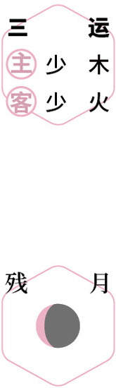
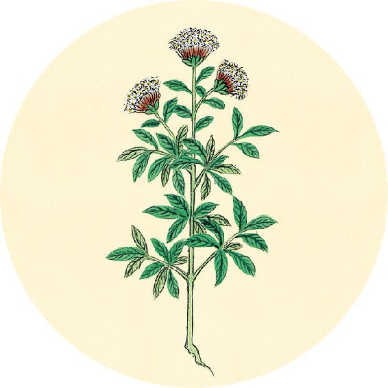
二十四节气茶养生
今年小暑节气品茶推荐：金银花茶。
银花甘草茶
原料：金银花20～30克（若用纯绿条，即未变白的青绿花蕾，则用10克）、生甘草6～10克。
做法：沸水冲泡，代茶饮。
功效：清凉解暑、清热解毒，预防小儿传染病，调理青春痘、幼儿湿疹、日光性皮炎。
这道茶是适合全家老小喝的防暑降温茶。
注意：风寒感冒时暂停。
【释义】黄帝问：脉有四时的变化是怎样的？诊脉怎样知道疾病的部位？诊脉怎样知道疾病的变化？诊脉怎样知道疾病发于内部？诊脉怎样知道疾病发于外部？请问这五者，可以讲给我听吗？
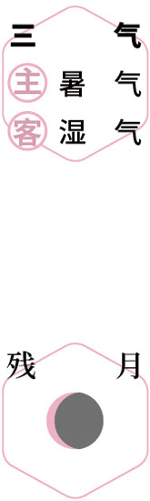
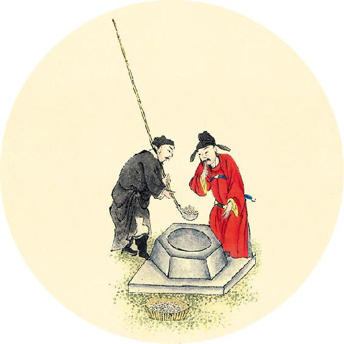
健康提示
小暑节气的养生功课：防三毒（血毒、火毒、光毒）。
今年小暑特殊的养生要点——
今年小暑节气，人体容易被湿气所困，注意补肺气。
保养重点：心脑血管、肺。
容易出现的问题：胸闷、全身酸重、腿肿。
岐伯曰：请言其与天运转也。万物之外，六合之内。天地之变，阴阳之应，彼春之暖，为夏之暑；彼秋之忿，为冬之怒；四变之动，脉与之上下。
——黄帝内经·素问·脉要精微论
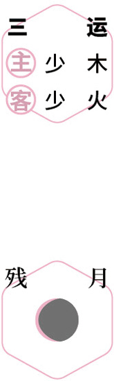
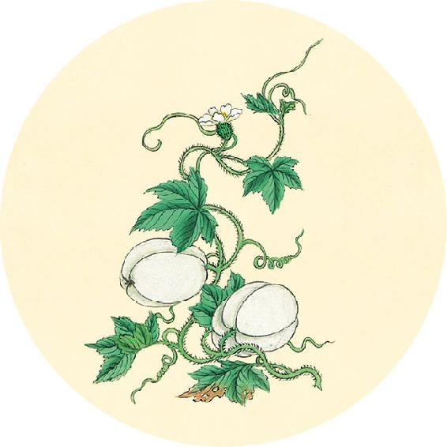
健康提示
从小暑开始进入夏天的第三个月。
本月养生关键词：冬病夏治。
上半月重点：排毒。
下半月重点：清湿热。
盛夏这个月人体出汗多，容易伤气。老话讲“一夏无病三分虚”，这个虚就是气虚。
饮食对策：黄芪、茯苓、荷叶。
还有11天入伏，可以从明天开始做伏前加强贴（材料见7月4日）。
【释义】岐伯答：让我说说脉象变化与天地运转的关系吧。世间各种生物之外，四方上下六合之内，天地变化，阴阳随之消长，春季的和暖，发展为夏季的暑热；秋季的肃杀，发展为冬季的酷寒。春夏秋冬四时的变迁，脉象随之往来上下。
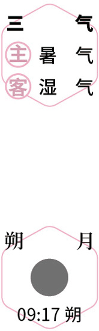
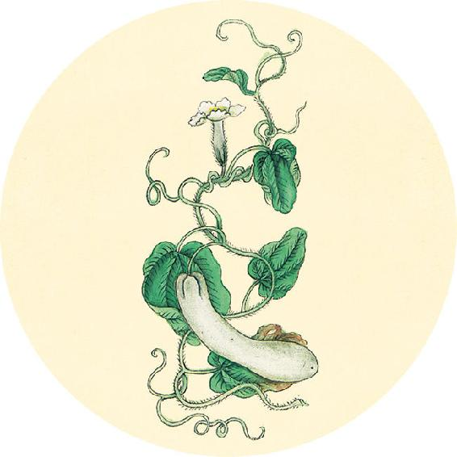
一候反思
今天是做伏前贴的日子，可根据7月16日自测选择是否需要做。
自测入伏后是否还需要继续喝姜枣茶：
长期待在有冷气的房间 □ 是 □ 否
胃寒 □ 是 □ 否
经常恶心反胃，有时呕吐清水 □ 是 □ 否
气血不通 □ 是 □ 否
下巴常长痘 □ 是 □ 否
以上如有一个答“是”，7月21日入伏后继续喝姜枣茶。
以春应中规，夏应中矩，秋应中衡，冬应中权。
——黄帝内经·素问·脉要精微论
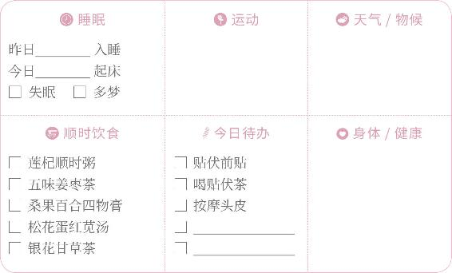
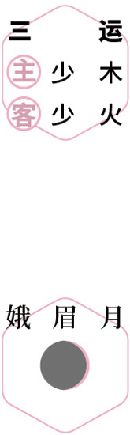
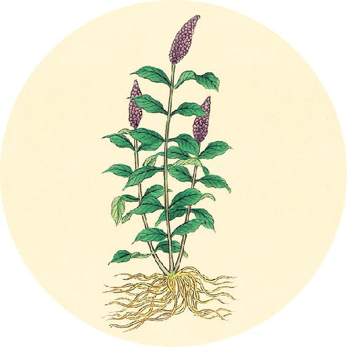
健康提示
家庭简易三伏贴步骤（上）
第一天：贴敷
1. 开穴：用真空气罐在穴位拔罐，留罐5分钟后取下，立即用生姜片涂擦拔罐部位。如果没有真空气罐，可以省略拔罐步骤，直接用生姜片涂擦。
2. 贴敷：将伤湿止痛膏剪成合适大小，或用艾灸贴（空调房、阴雨天、局部有寒湿用艾灸贴），贴在穴位上。成人贴2～6小时、儿童贴0.5～2小时取下。如果贴后感觉皮肤特别发痒或不舒服，可以提前取下来。
【释义】春季的脉象应像规（圆滑流畅），夏季的脉象应像矩（洪大方正），秋季的脉象应像衡（轻平虚浮），冬季的脉象应像权（下沉于里）。
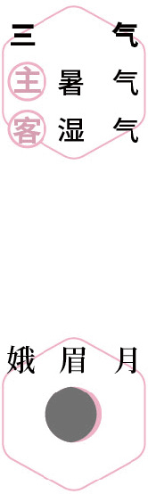
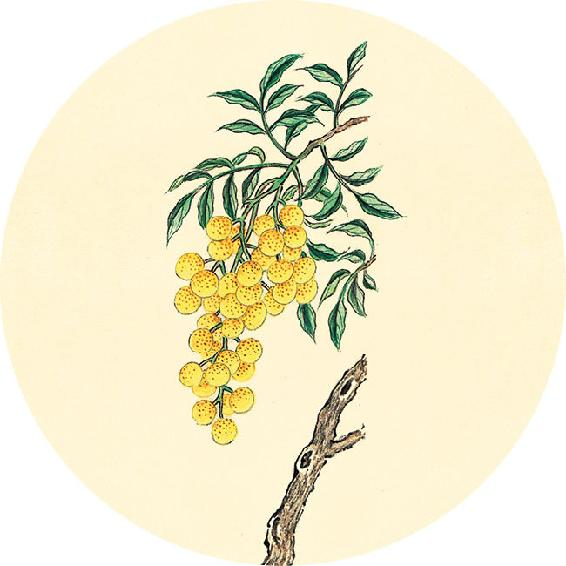
健康提示
家庭简易三伏贴步骤（下）
3. 喝贴伏茶。
做法：玫瑰花沸水冲泡，加红糖饮用。
第二天：刮痧
4. 如果贴后第二天感觉局部皮肤发痒，这是排毒的好现象，要以刮痧来辅助。
做法：用刮痧工具或光滑的小瓷勺，蘸上香油在发痒的部位刮痧。刮出痧痕后，发痒的感觉就会消失。
是故冬至四十五日，阳气微上，阴气微下；夏至四十五日，阴气微上，阳气微下。
——黄帝内经·素问·脉要精微论
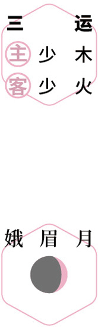
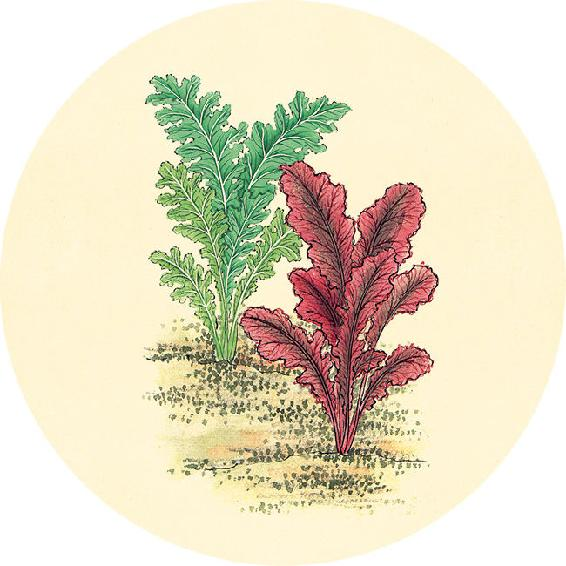
健康提示
三伏贴注意事项：
1. 贴时避开空调，如果实在不能避开就用自发热的艾灸贴。
2. 不能贴在皮肤有创伤、湿疹、过敏的部位。
3. 贴三伏贴当天忌吃生冷、海鲜、辛辣的食物。
4. 宜在晴天贴（短时间雷阵雨也可以贴）。如果遇到整天阴雨，最好推迟一天贴。
5. 孕妇及2岁以下幼儿慎贴。
【释义】因此冬至后45日，阳气渐升，阴气渐降；夏至后45日，阴气渐升，阳气渐降。
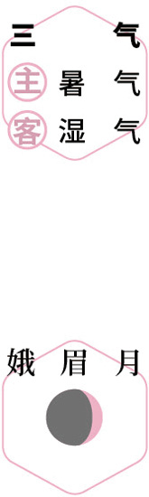
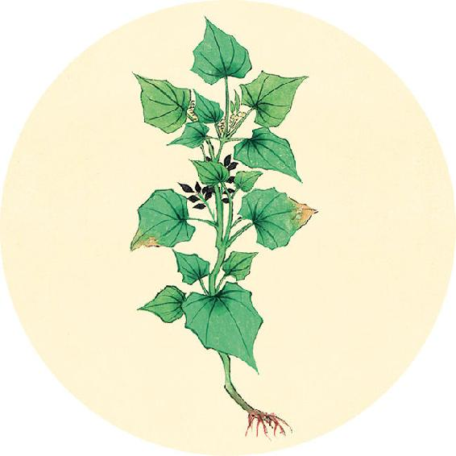
健康提示
今年贴三伏贴的时间：
伏前：7月11日伏前贴，7月14、17日加强贴。
初伏：7月21日初伏贴，7月24、27日加强贴。
中伏：7月31日中伏贴，8月3、6日加强贴。
末伏：8月10日末伏贴，8月13、16日加强贴。
伏后：8月20日伏后贴，8月23、26日加强贴。
如果错过上述日期，也可补贴。按照下页自查结果来确定次数。
阴阳有时，与脉为期。
——黄帝内经·素问·脉要精微论
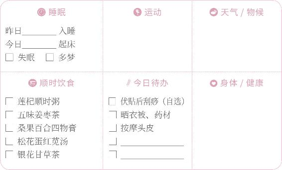
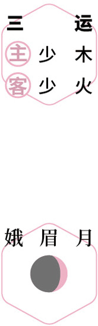
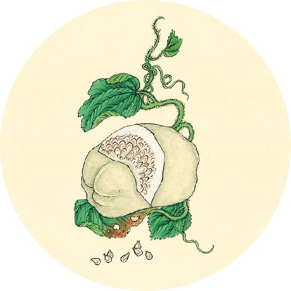
二候反思
你需要做几次三伏贴？重点贴哪些部位？
翻到2020年12月30日及2021年1月31日，查看当时记录的身体出现过的病症，将它们归类到：
1. 呼吸系统问题： 2. 腰腿关节问题：
3. 脾胃问题： 4. 肝胆问题：
5. 妇科/男科问题：________ 6. 其他问题：
7. 膝盖劳损自测：用手心捂住膝盖，感觉热乎乎的，很舒服 □ 是 □ 否
（翻到7月17日查调理方案）
【释义】阴阳的升降，有时间的规律，脉象的变化与之相应。
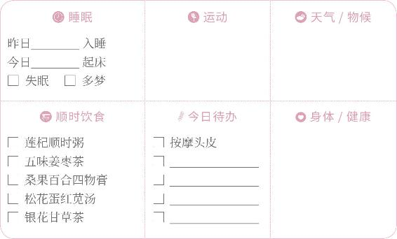
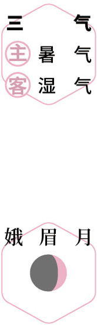
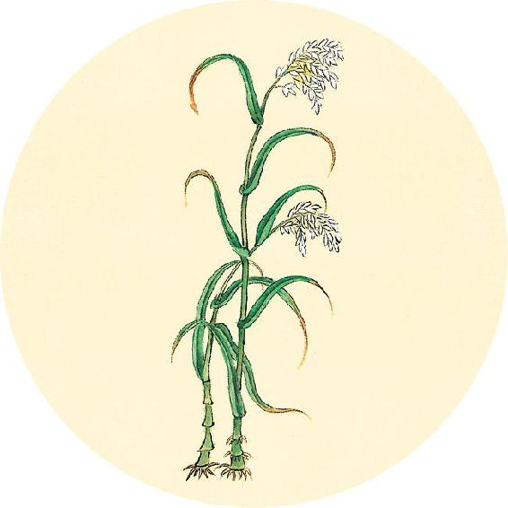
二候反思
三伏贴调理方案
对照上页记录进行选择并打钩：
□ 1和2任何一项出现问题，每伏做三次伏贴（共9次）；
□ 3、4、5、6有任意两项出现问题，每伏做三次伏贴（共9次）；
□ 如果超过3项有问题，可以在入伏前10天和出伏后10天内各做3次加强贴。
□ 其余情况，每伏做一次（共3次）。
贴敷部位见7月18日。
期而相失，知脉所分；分之有期，故知死时。
——黄帝内经·素问·脉要精微论
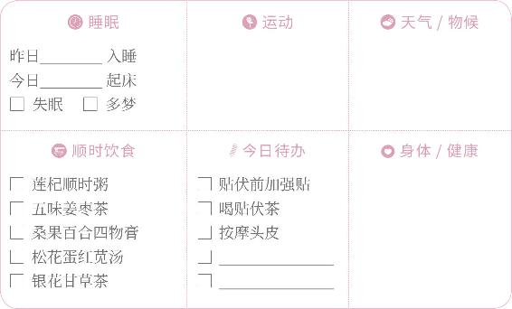
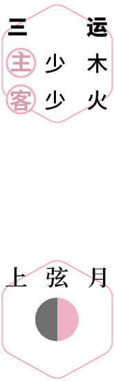
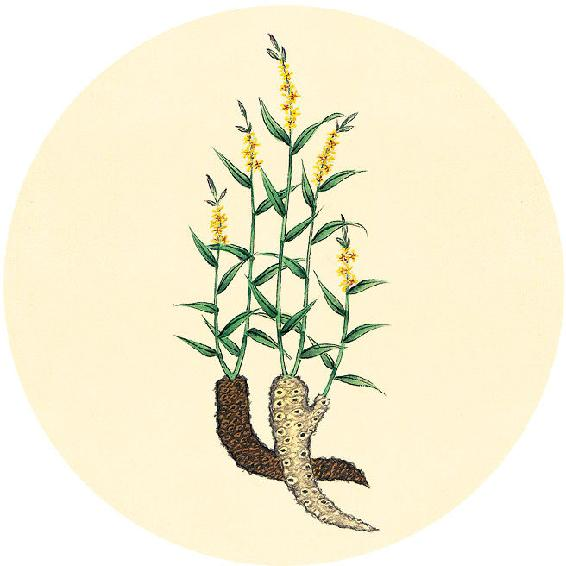
健康提示
三伏贴，除今年全家重点保健部位（见7月19日）外，可以针对自己冬季出现的问题（7月16日记录），在个人需要贴的穴位前打钩：
□ 呼吸系统问题：后背上半部分穴位
□ 腰腿膝关节问题：疼痛或感觉寒凉部位
□ 脾胃问题：肚脐以上穴位
□ 肝胆问题：后背下半部分穴位
□ 妇科/男科问题：小腿三阴交、臀部八髎穴
□ 其他问题：与问题相关的穴位
□ 保健部位：足三里、后颈、后背脊柱两侧
□ 膝盖问题：贴双膝
贴敷步骤见7月12日。
【释义】若病人的脉象与四时应有之脉象不合，就可以从脉象知道病是属于哪个脏腑；再根据五脏四时之气的变化规律，就可以推断出病人的死期。
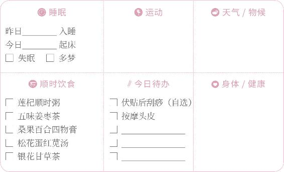
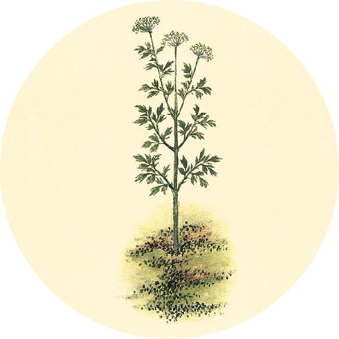
健康提示
今年三伏，全家重点贴两个穴位。
1. 太溪穴：在脚的内踝与跟腱之间凹陷的地方，双脚各一个。它是肾经的原穴，功能是滋阴益肾，壮阳强腰，古人认为它具有“决生死，处百病”的作用。
2. 阴谷穴：在膝盖内侧，双膝各一个。它是肾经的合穴，功能是补肾培元、清热利湿，主治阳痿、月经不调等生殖系统疾病。贴的时候可以连同膝盖前侧一起贴。
微妙在脉，不可不察；察之有纪，从阴阳始。
——黄帝内经·素问·脉要精微论
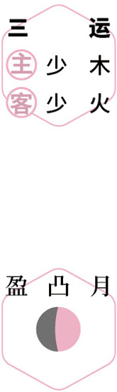
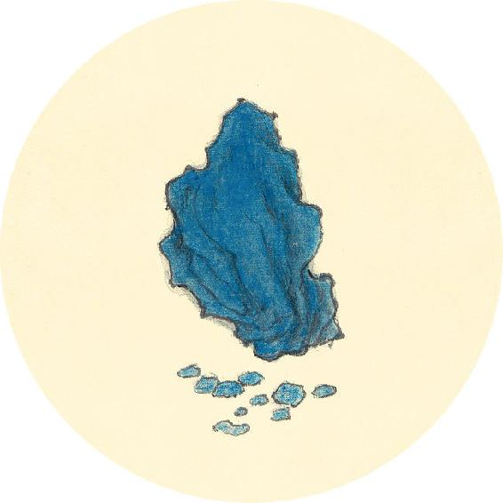
食材准备
后天进入大暑节气。
1. 杏仁拌茴香
原料：甜杏仁、茴香菜。
2. 银花甘草茶
原料：金银花、甘草。
3. 辛丑岁四气保健方：桂花葛根粉（从大暑喝到秋分前日，做法见7月29日）
原料：葛根粉、桂花（干品）、枸杞、蜂蜜（糖尿病人可以用罗汉果甜味料代替）各适量。
4. 三伏贴
原料：见7月4日。
【释义】诊断的微妙都在脉象上，不可不细心探察；而探察是有要领的，从是否符合四时阴阳变化规律开始。
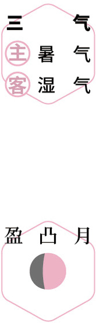
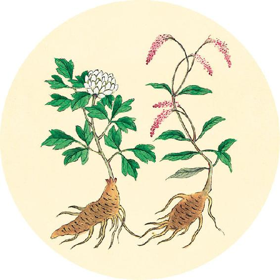
健康提示
今日入伏，贴三伏的初伏贴。今年三伏贴的日期、重点部位、贴法见7月12日至19日。
2020年12月11日自测或扫码自测，结果在此记录：
三伏做加强贴 □ 是 □ 否
节气总结备
喝松花蛋红苋汤的次数________
喝桂花葛根粉的次数________
喝莲杞顺时粥的次数________
身体哪些方面有改善_________________________
始之有经，从五行生；生之有度，四时为宜。
——黄帝内经·素问·脉要精微论
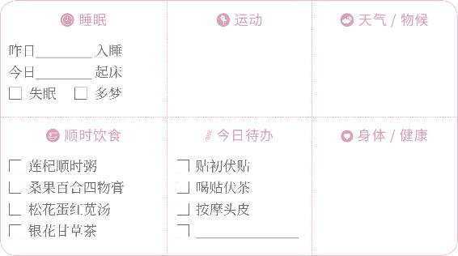
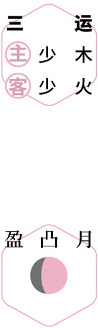